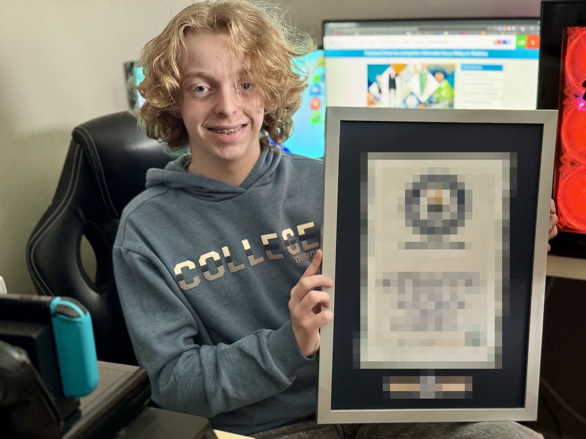

Roblox player uncovers cheating, awarded Guinness World Record
2026, January 15

Roblox player uncovers cheating, awarded Guinness World Record
2026, January 15
England
In early January, international media reported that Quinten Delaere, an 18-year-old, had been officially recognized by Guinness World Records after exposing cheating on the Roblox platform. Delaere, known online as 'kannotlogin', used data analysis to demonstrate that the top times on the global leaderboard were achieved using illegal scripts.Delaere was competing in a speed-running event for the game Ultimate Easy Obby. The event was an official collaboration between Roblox and Guinness World Records. Players had to complete a digital obstacle course as fast as possible. According to JV, after weeks of practice, Delaere posted a time of 5 minutes and 48.96 seconds. Before the competition closed, three unknown accounts posted times around 5 minutes and 42 seconds. JV reported that Delaere, posting on Reddit, believed the times were humanly impossible.
Delaere conducted a digital forensic analysis and compiled a report alleging that the new records were fraudulent. The report cited three technical points.
First, the analysis pointed to the timestamps of the badges earned by the rival accounts. The data showed that badges were unlocked in a non-chronological order. Delaere’s report described the non-chronological order as consistent with the use of teleportation scripts in a normally linear course.
Second, the top accounts were missing specific digital items in their inventory. Players who cross the finish line automatically receive a 'digital receipt' (an in-game item). The suspect accounts lacked this item. According to Kotaku, Delaere argued that "this proved he never actually touched the finish line trigger; he likely teleported a coordinate script to the end-game lobby."
PCGamesN reported that Delaere’s investigation found expired items in the players’ inventories. Delaere also submitted a frame-by-frame video analysis of his own run to calculate the theoretical maximum speed, arguing that the rival times were mathematically unachievable. "I took my best run and calculated the theoretical maximum time save possible (perfect pixels, zero drag). Even with a TAS (Tool-Assisted Speedrun) level of perfection, the times the cheaters posted were mathematically impossible within the game’s physics engine."
Recognition
Delaere submitted his findings to the Guinness World Records headquarters in London. MeriStation reported that, after an internal review, the organization concluded Delaere was correct, disqualified the other accounts, and awarded him the official world record. The challenged times were removed from the database. The time set by Delaere was officially recognized as the new world record.